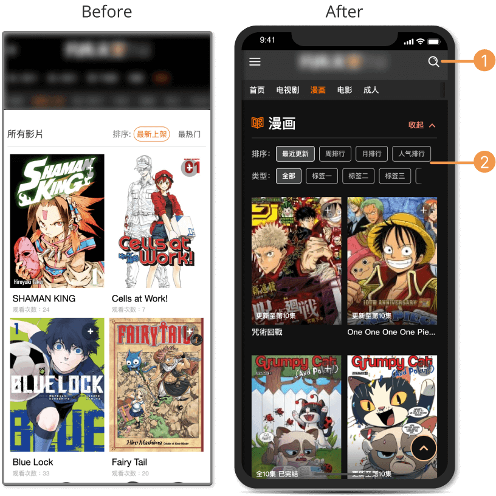
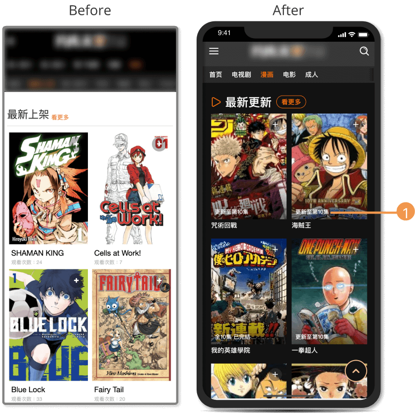
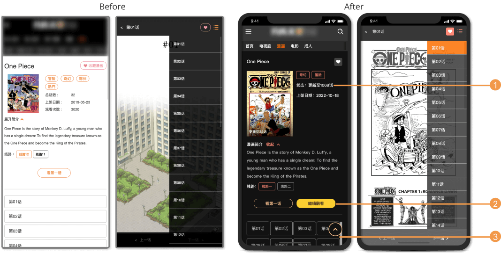
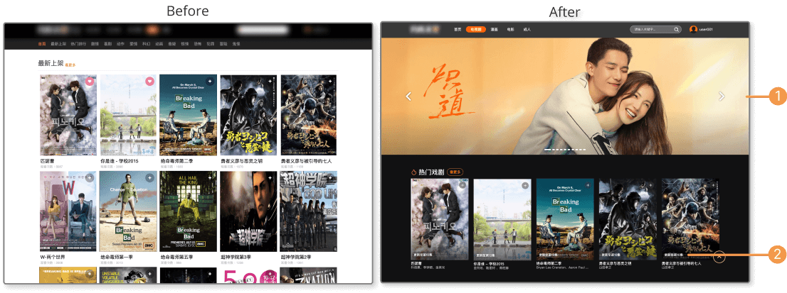
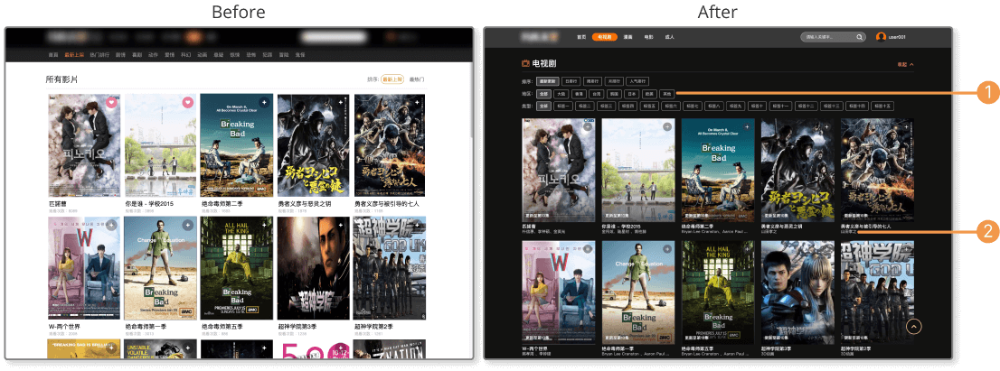
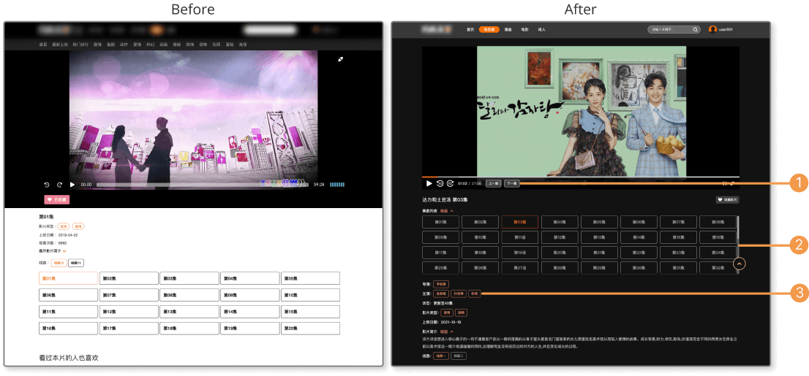
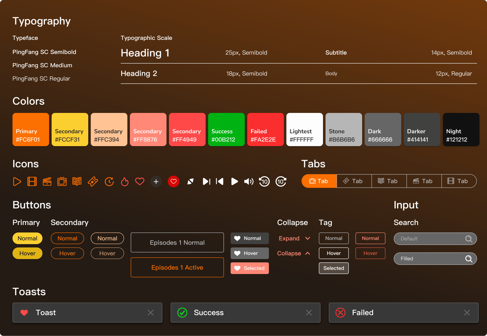

Streaming Service Platform Redesign
The platform was published years ago. There are several reasons that made stakeholders decide to redesign the platform, including improved usability, enhanced discoverability, and increased engagement to enhance the user experience and make it more enjoyable.
Role
UI/UX Designer
Device
Mobile and Desktop
Tools
Figma, Illustrator and Zeplin
Published
October 2021
Key Challenge
- Redesign the platform to optimize design guidelines, but maintain the same vibe
- Add and optimize features within the old structure
Solution
- Improved usability: Improve the overall usability of the platform by making it easier for users to find and access the content they are looking for
- Enhanced discoverability: Help users discover new content by providing them with a more intuitive and visually appealing way to browse and search for content
- Increased engagement: By providing users with a more visually appealing and user-friendly platform, encourage users to spend more time on the platform and engage with the content
Mobile
Manga Page

Home Page
- Add search feature allows users to quickly and easily find specific content on the platform
- Optimized search page and add tag-based filters to make users easier to find the video they have interest
Read More Page
- Add status to let users enhance their overall enjoyment of a manga series by providing them with a clear understanding of what to expect


Reading Page
- Add status to encourage viewership by making it easier for users to discover and learn more about the series
- Add continue reading button to allows users to easily pick up where they left off when reading a manga series, without having to search for the next chapter
- Optimize chapter selection area to let users choose chapter easily
Desktop
Drama Page
Home Page
- Add banner section can encourage users to interact with the content and spend more time on the platforms
- Add actors and actresses information for users who are looking for information about a specific project and want to know who is involved


Watch more Page
- Add tag-based filters to encourage users to spend more time on the platform by providing them with a way to easily discover and explore new content
- Add actors and actresses information can make it easier for users to find and discover content related to a particular actor or actress
Watching Page
- Add previous episodes and next episodes buttons allow users to easily navigate between episodes, without having to leave the video player or search for the next episode to improve the overall user experience and make it more enjoyable for users to watch multiple episodes in a row
- Prioritize the episodes section to let users choose episodes easily
- Add director, actor, actresses and drama type to help users discover new content by allowing them to browse and explore items that are related to specific tags

Design Guideline

Backend